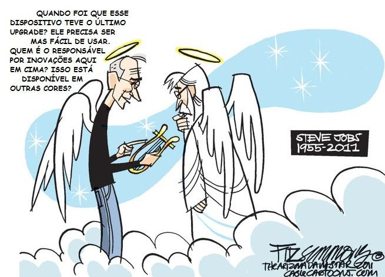

Problemas de saúde
Em outubro de 2003, Jobs foi diagnosticado com câncer de pâncreas. Em julho de 2004 ele foi submetido a uma cirurgia de duodenopancreatectomia, para retirada do tumor. No dia 24 de agosto de 2011, Jobs renunciou à presidência da Apple. Ele esperava permanecer como presidente da mesa de direção da empresa, recomendando em sua carta de demissão que Tim Cook fosse nomeado seu sucessor.
Morte
Steve Jobs morreu no dia 5 de outubro de 2011 na sequência de um câncer pancreático raro que afeta as funções exócrinas do órgão, contra o qual lutava desde 2004. O anúncio foi dado pela família dele, que disse: "morreu em paz hoje". A causa final da morte foi uma parada cardíaca. A empresa da qual ele foi fundador e CEO, a Apple Inc., divulgou um comunicado separadamente anunciando a morte de Steve Jobs
Homenagens
Em sua morte foi inevitável uma justa chuva de homenagens, que se espalhou pelos sites de notícias e tecnologia do mundo inteiro. Portais como Wired ou blogs como o Boing Boing mudaram completamente seus layouts, em homenagem póstuma ao fundador da Apple.
A Wired mudou completamente o seu layout e deixou o fundo todo preto, em destaque, além da imagem de Steve Jobs, frases de diversas personalidades influentes do mundo da tecnologia e da política mundial.
O famoso blog Boing Boing foi outro que fez uma mudança radical no seu layout, que ficou com o mesmo aspecto dos primeiros sistemas operacionais da Apple, todo em preto e branco.
O site brasileiro MacMagazine, especializado em cobrir todos os produtos e serviços que a Apple lança, mudou o fundo de sua home pela foto em preto e branco do Steve Jobs, e na logo, colocou uma “fitinha preta”, para representar o luto.
O blog noticioso The Huffington Post destacou a repercussão da morte de Steve Jobs na área mais nobre do site, com uma “nuvem de tags” com os principais fatos que cercam a morte do ex-CEO da Apple, e mais uma coleção de imagens da carreira dele.
Durante a madrugada da sua morte, fãs se reuniram em frente à loja da Apple, em Nova York. No local, diversos de veículos da imprensa americana se posicionaram para transmissões ao vivo. Lojas da Apple em diversas cidades do mundo também foram palco de homenagens.
Em um dos muros que circundam temporariamente a loja em Nova York, que passa por uma reforma, lia-se: “Eu amo Steve (I love Steve)”. Um pequeno memorial improvisado na escadaria, com mensagens, rosas, velas e muitas maçãs, símbolo da empresa, era fotografado por todos que chegavam, com câmeras, celulares e, claro, iPhones. Um bilhete dizia: “Obrigado por tudo Steve!! Vamos sentir saudades.”.
À parte a importância de Jobs para o universo tecnológico – ele recebeu homenagens até do presidente americano, Barack Obama, jovens comentaram sobre o que os aparelhos da Apple mudaram na vida deles. “Jobs, com sua precisão nos detalhes, mudou meu comportamento, minha forma de ver o mundo. Hoje, presto muito mais atenção nos detalhes das coisas a minha volta”, ressaltou o ator Eric Lommel, de 26 anos.
Na China, dezenas de admiradores se reuniram nas lojas da marca em Pequim e Xangai para homenagear o cofundador da Apple. “É o melhor professor que tive nesta vida”, afirmava na porta de uma loja de Pequim o engenheiro de software Jie Bing, enquanto outros admiradores deixavam junto à entrada flores, mensagens de carinho e outras homenagens.
Não faltaram oferendas de maçãs, uma prática taoista muito habitual nas sepulturas chinesas, onde são deixados alimentos para os mortos, e que desta vez apareciam mordidas pelos fãs, para ficarem semelhantes com o inconfundível logotipo da empresa americana.
Nos cartões colocados no lugar podiam ser lidas frases como “adeus mestre” ou “voe para um novo caminho”.
